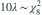

独立样本来自速率λ的指数分布，n=4且  。若a、b分别是
。若a、b分别是  的0.025和0.975下侧分位点，λ的95%等尾置信区间是？
的0.025和0.975下侧分位点，λ的95%等尾置信区间是？
。若a、b分别是 的0.025和0.975下侧分位点，λ的95%等尾置信区间是？- A
- B
- C
- D
我已思考，展开答案与解析
正确答案：B
- ，本题为

。 - 由 得 。
易错提醒若估计尺度1/λ才需要取倒数；速率区间端点无需交换。
考后回忆 · 条件重建 · 回忆7、9；Ross第5.2.4节为Gamma和的背景
依据考试回忆重建；数字、选项和必要条件为补充设定，非原题。